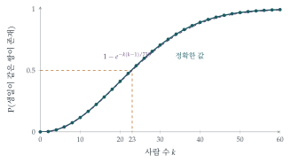

STEP II 2007, 문제 13
계속 읽기 전에 문제를 먼저 읽어 보자. 문제는 STEP Support Programme의 문제 데이터베이스에 있다: step.maths.org/questions/07-s2-q13
도입
한 방에 몇 명이 있어야 그중 두 사람의 생일이 같을 확률이 같지 않을 확률보다 커질까? 대부분의 사람은 \(365\)의 절반인 \(180\) 근처라고 짐작한다. 답은 \(23\)이다. 서른 명인 학급에서는 생일이 같은 두 사람이 있을 확률이 \(70\%\)이고, 쉰 명이 모인 파티에서는 \(97\%\)이다.
이 놀라움은 서로 다른 두 질문을 혼동하는 데서 온다. 하나는 “누군가 나와 생일이 같은가?”(이 경우에는 실제로 약 \(253\)명이 필요하다)이고, 다른 하나는 “어떤 두 사람이든 생일이 같은가?”이다. \(23\)명이 있으면 쌍이 \(\binom{23}{2} = 253\)개 생기고, 각 쌍이 모두 생일이 일치할 기회가 된다. 이 문제는 그 직관을 정확하게 만들어 주며, 같은 수학이 여러분의 은행 계좌를 보호하는 암호(cryptography)가 얼마나 안전한지를 결정한다.
시작하기 전에
왜 어떤 두 손님도 생일이 같지 않을 확률을 계산하는 편이 더 쉬울까? 손님들을 한 줄로 세워 보자. 두 번째 손님이 첫 번째 손님의 생일을 피할 확률은 얼마인가? 세 번째 손님이 두 사람의 생일을 모두 피할 확률은?
“적어도 두 사람의 생일이 같다”는 서로 겹치는 많은 경우(두 사람이 같은 경우, 세 사람이 같은 경우, 서로 다른 두 쌍이 같은 경우, …)를 포함한다. 그 여사건(complement)인 “모두 다르다”는 하나의 깔끔한 사건이다. 두 번째 손님은 확률 \(\frac{364}{365}\)로 첫 번째 손님의 생일을 피하고, 그렇다는 조건 아래에서 세 번째 손님은 확률 \(\frac{363}{365}\)로 두 사람의 생일을 모두 피한다. 이런 식으로 계속된다.
차근차근 풀기
단계 1 유용한 근사
\(x = 0\)에서 \(y = e^{-x}\)의 접선(tangent line)은 무엇인가?
\(e^{-x} = 1 - x + \frac{x^2}{2} - \cdots\)이므로, \(x\)가 작을 때 \(e^{-x} \approx 1 - x\)이다. \(x = r/n\)으로 두면 \[\frac{n - r}{n} = 1 - \frac{r}{n} \approx e^{-r/n}. \qed\] 오차는 약 \(\frac{r^2}{2n^2}\)이며, \(r\)이 \(n\)보다 훨씬 작으면 작다.
단계 2 생일이 같은 사람이 있을 확률
\(k\)명의 생일이 모두 다를 확률은 \[\frac{365}{365}\cdot\frac{364}{365}\cdot\frac{363}{365}\cdots\frac{365 - (k - 1)}{365} = \prod_{r=0}^{k-1}\frac{365 - r}{365}.\] 각 인수에 근사(approximation)를 적용하고, 지수함수를 곱하면 지수(exponent)가 더해진다는 사실을 이용하면 \[\prod_{r=0}^{k-1}e^{-r/365} = \exp\Bigl(-\frac{0 + 1 + \cdots + (k - 1)}{365}\Bigr) = \exp\Bigl(-\frac{k(k - 1)}{730}\Bigr).\] 따라서 생일이 같은 쌍이 적어도 하나 있을 확률은 근사적으로 \(1 - e^{-k(k-1)/730}\)이다.■
지수를 살펴보자. \(\frac{k(k-1)}{730} = \binom{k}{2}\Big/365\)이다. 이것을 말로 하면 무슨 뜻인가?
이것은 손님 쌍의 개수에 주어진 한 쌍의 생일이 같을 확률 \(\frac{1}{365}\)를 곱한 것, 즉 생일이 같은 쌍의 개수의 기댓값(expected value)이다. 이 근사는 일치가 하나도 없을 확률이 \(e^{-(\text{일치하는 쌍의 개수의 기댓값})}\)이라고 말해 준다. 9.8 절에서처럼 여기서도 푸아송 분포(Poisson distribution)의 흔적이 보인다.
단계 3 스물셋
\(1 - e^{-k(k-1)/730} \geq \frac12\), 즉 \(e^{-k(k-1)/730} \leq \frac12\)이어야 하므로 \[\frac{k(k - 1)}{730} \geq \ln 2 \approx \frac{253}{365}, \qquad\text{즉}\qquad k(k - 1) \geq 506.\] \(22 \times 21 = 462\)이고 \(23 \times 22 = 506\)이므로 가장 작은 값은 \(k = 23\)이다.■
(\(23\)명일 때의 정확한 확률은 \(0.507\)이고 \(22\)명일 때는 \(0.476\)이므로, 근사로 올바른 답을 얻는다.)
단계 4 주인과 생일이 같은 경우
각 손님에 대해, 파티 주인과 생일이 같지 않을 확률은 얼마인가? 이 점에서 손님들은 서로 독립(independent)인가?
각 손님은 독립적으로 확률 \(\frac{364}{365} \approx e^{-1/365}\)로 주인의 생일을 비켜 간다. 따라서 \(k\)명의 손님 중 아무도 주인과 생일이 같지 않을 확률은 \(\bigl(\frac{364}{365}\bigr)^k \approx e^{-k/365}\)이고, 다음이 성립해야 한다. \[e^{-k/365} \leq \tfrac12, \qquad\text{즉}\qquad k \geq 365\ln 2 \approx 253.\] 그러므로 손님이 \(253\)명 있어야 한다.■
이 대비가 핵심이다. 특정한 한 사람과 일치하려면 손님이 \(253\)명 필요하지만, 어떤 쌍이 일치하는 데는 \(23\)명이면 충분하다. \(23\)명이 \(253\)개의 쌍을 이루기 때문이다.

돌아보기
여사건을 이용하라. “모두 다르다”는 하나의 곱이었지만, “적어도 하나 일치한다”는 엉망이었다.
선형화한 다음 지수화하라. 각 인수 \(1 - x\)를 \(e^{-x}\)로 바꾸자 곱이 합으로 바뀌었다.
쌍을 세어라. 지수는 쌍의 개수에 한 쌍이 일치할 확률을 곱한 것이었다. \(k(k-1)\) 속의 제곱이 이 역설에 대한 설명의 전부이다.
숨은 수학
제곱근 법칙
\(365\)일 대신 똑같이 가능한 날이 \(n\)일 있다면, 같은 논증으로 \[\mathrm{P}(\text{일치가 있을 확률, 인원 } k) \approx 1 - e^{-k^2/(2n)},\] 을 얻는다. 따라서 \(k\)가 \(n\)이 아니라 \(\sqrt{n}\) 정도만 되어도 일치가 일어날 가능성이 커진다. 더 정확히 말하면, 확률은 \(k \approx 1.18\sqrt{n}\)에서 \(\frac12\)에 이르고, 처음으로 겹치는 사람이 나올 때까지 만나야 하는 사람 수의 기댓값은 약 \(\sqrt{\pi n/2}\)이다(\(n = 365\)이면 약 \(24.6\)). 이 제곱근 법칙(square-root law)이 우연의 일치가 그토록 흔한 이유이다. 사건들을 크게 모아 놓으면, 특정한 일치 하나하나는 일어날 것 같지 않아도 어떤 쌍은 어떤 식으로든 일치할 가능성이 크다.
생일 공격
컴퓨터는 파일이 변조되지 않았는지 확인하기 위해 해시(hash)를 계산한다. 해시는 예컨대 \(n = 2^{128}\)가지의 값 중 하나를 갖는 지문과 같은 것이다. 해시가 같은 두 문서(무해한 계약서와 사기성 계약서)를 원하는 위조자는 \(2^{128}\)개의 문서를 시도할 필요가 없다. 생일 논증에 따르면 각 문서의 변형을 약 \(\sqrt{2^{128}} = 2^{64}\)개씩 만들어 내면 아마도 일치가 생길 것이다. 이 생일 공격(birthday attack) 때문에 현대의 해시 함수는 \(256\)비트 이상을 사용한다. 제곱근 법칙 때문에 비트의 절반을 잃기 때문이다. 비슷한 계산으로, 두 컴퓨터가 실수로 같은 식별자를 고르는 일이 결코 없도록 무작위 식별자의 길이를 얼마로 해야 하는지도 정한다.
생일 문제는 보통 1939년에 이 문제를 다룬 리하르트 폰 미제스(Richard von Mises)의 공으로 돌려지지만, 그 이전부터 퍼져 있었다. 해럴드 대븐포트(Harold Davenport)도 그보다 먼저 이 문제를 알고 있었으나 너무 단순해 보여서 발표하지 않았다고 전해진다. 워런 위버(Warren Weaver)가 전하는 이야기에 따르면, 그는 제2차 세계 대전 중 육군 장교들의 만찬에서 이 문제를 보여 주기를 좋아했다. 한번은 그 자리에 있던 스물두 명 중 두 사람의 생일이 같다는 데 내기를 걸었다가 졌는데, 그때 한 웨이트리스가 자신이 장교 중 한 명과 생일이 같다고 밝혔다.
사고 기술
“적어도 하나”가 복잡할 때는 “하나도 없음”의 확률을 구하라. 곱이 다루기 까다로울 때는 각 인수를 지수함수로 근사하고 지수를 더하라.
두 방법 모두 대학에서 표준적으로 쓰인다. 두 번째 방법인 \(1 - x \approx e^{-x}\)는 푸아송 근사 이론의 출발점이며, 정확히 계산하기에는 너무 복잡한 양을 추정하는 데 쓰이는 점근적 방법(asymptotic methods)의 출발점이기도 하다.
더 도전하기
첫 번째 반복. STEP II 2014, 문제 13에 도전해 보자. 이 문제는 난수 생성기에서 처음으로 반복되는 값을 다루는데, 이는 모습을 바꾼 생일 문제이며, 확률들을 놀라운 두 항등식으로 바꾸어 놓는다.
세 사람의 생일이 같은 경우. 어떤 세 사람의 생일이 같을 확률이 절반보다 커지려면 대략 몇 명이 필요한가? (힌트: 생일이 같은 세 사람 묶음의 개수의 기댓값은 \(\binom{k}{3}/365^2\)이다. 이 값을 약 \(\ln 2\)로 놓아라.) 실제 답은 \(88\)이다.
아슬아슬한 경우. 두 사람의 생일이 같은 날이거나 이웃한 날일 확률이 절반이 되려면 몇 명이 필요한가?
고르지 않은 생일. 실제 생일은 균등하게 분포하지 않는다. 각 날의 확률이 \(p_1, \ldots, p_{365}\)일 때 두 사람의 생일이 같을 확률은 \(\sum p_i^2\)이고, 이 값은 모든 \(p_i\)가 같을 때 가장 작음을 보여라. (따라서 분포가 고르지 않으면 일치가 오히려 더 일어나기 쉬워진다.)
더 읽을거리
William Feller, An Introduction to Probability Theory and Its Applications, Vol. 1 (Wiley), 제II장. 생일 문제와 그 근사.
Persi Diaconis & Frederick Mosteller, “Methods for studying coincidences”, Journal of the American Statistical Association 84 (1989). 우연의 일치가 흔한 이유를 다루며, 매우 읽기 쉽다.
David Hand, The Improbability Principle (Bantam). 제곱근 법칙을 비롯해, 일어날 것 같지 않은 일이 늘 일어나는 이유들을 다룬다.